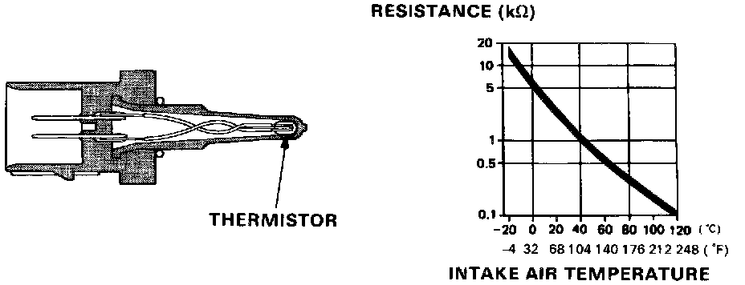
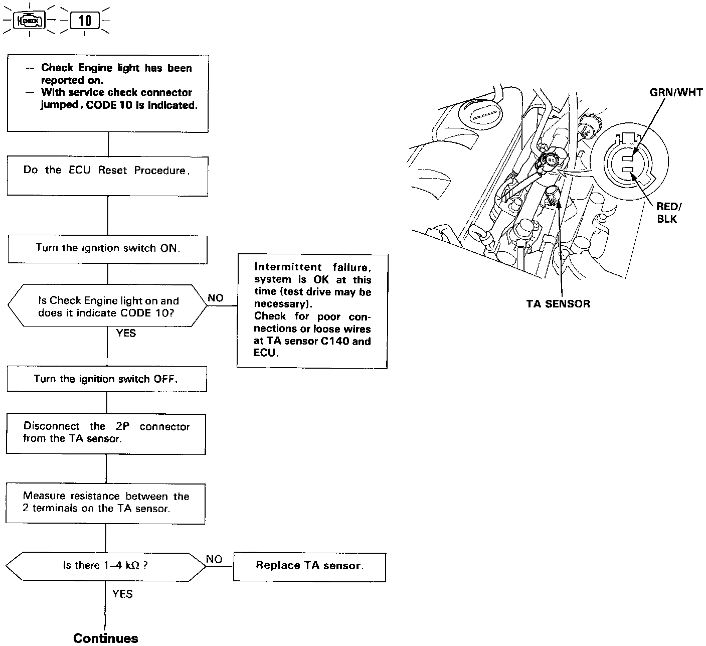
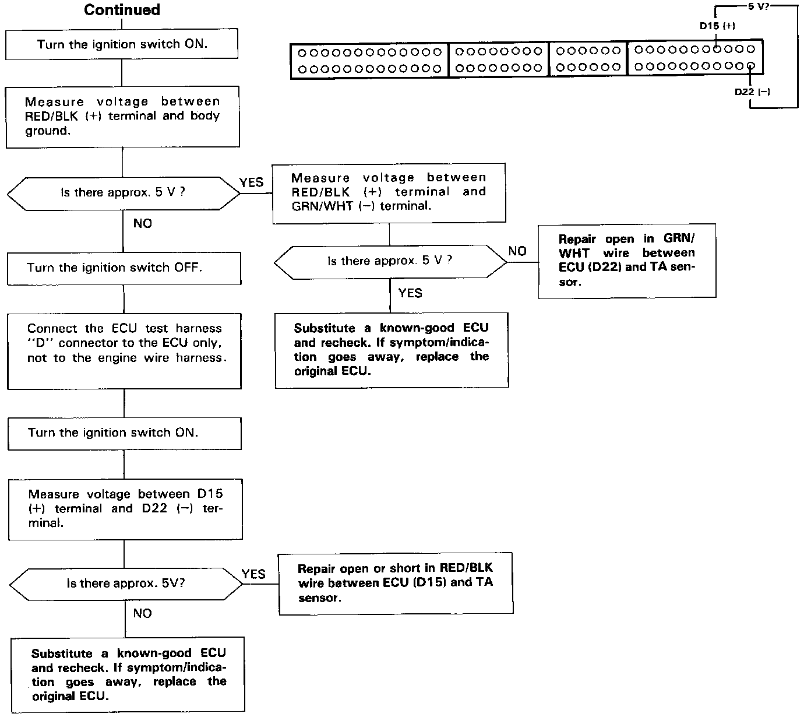

Air Temperature Sensor ( Ambient / Intake ): Testing and Inspection



Self-diagnosis Check Engine light indicates code 10: A problem in the Intake Air Temperature (TA) Sensor circuit.
The TA sensor is a temperature dependant resistor (thermistor) The resistance of the thermistor decreases as the intake air temperature increases as shown.